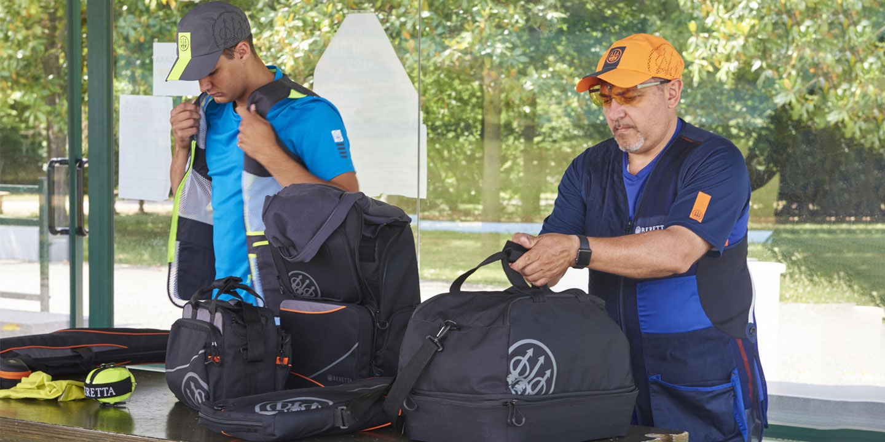
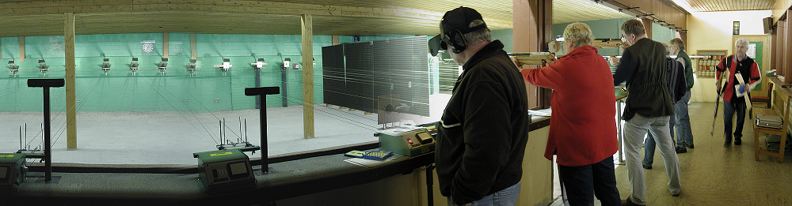
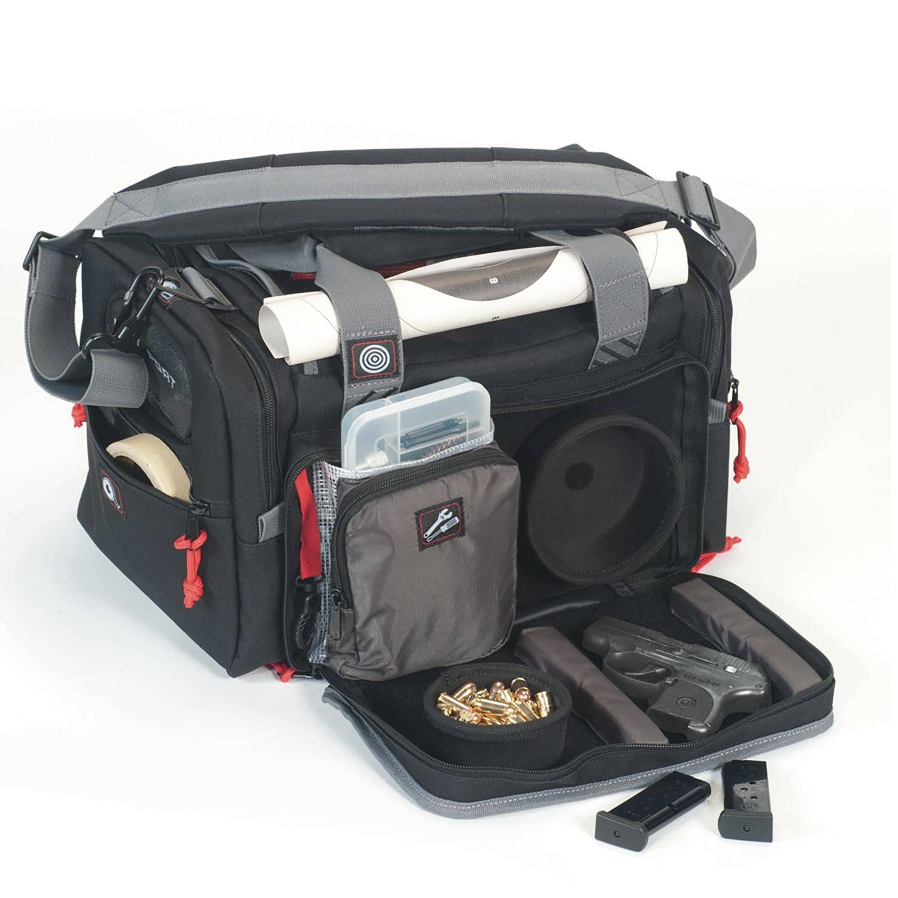
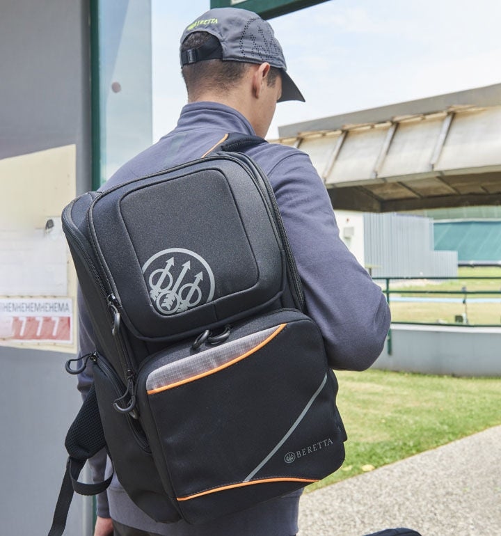
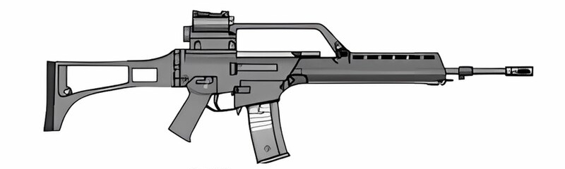

Verantwortung schuetzen und GRA-Mitglied werden.
Die German Rifle Association vernetzt Sportschuetzen, Vereine, Sammler und rechtlich interessierte Buerger in Deutschland. Im Mittelpunkt stehen Sachkunde, sichere Aufbewahrung, Vereinsarbeit und transparente Informationen.


Vereinsfinder: Sachkundetage und Trainingsabende in Deutschland
Deutsche Hersteller im Fokus: H&K, Walther und Blaser
GRA Explore
Entdecke deine GRA
GRA
Mitgliedschaft fuer Sportschuetzen, Vereine und Foerderer.
Beitreten ->GRA Recht
Deutsche Gesetze, Pflichten und Quellen im Ueberblick.
Ansehen ->
GRA Media
Magazine, Videos und Hintergrundstuecke.
Browsen ->Services
Login, Vorteile und digitale Mitgliedskarte.
Verwalten ->
Vereine
Finde Trainingsorte und Infoabende in deiner Region.
Suchen ->Foerderkreis
Events fuer Austausch, Sicherheit und Vereinsarbeit.
Termine ->
GRA Recht
Rechtslage und Verantwortung in Deutschland
Kein US-Versprechen, sondern deutsche Regeln.
In Deutschland stehen Erlaubnis, Zuverlaessigkeit, persoenliche Eignung, Sachkunde, Beduerfnis und sichere Aufbewahrung im Mittelpunkt.
Die GRA stellt hier nur redaktionelle Hinweise bereit. Fuer konkrete Faelle sind Behoerden, Rechtsberatung und aktuelle Gesetzestexte massgeblich.
Quellen ansehen
"Vereine und Gesellschaften zu bilden"
Grundgesetz Art. 9 als Ausgangspunkt fuer Vereinsarbeit.
"Erwerb und Besitz ... beduerfen der Erlaubnis"
WaffG-Kontext: Erlaubnisse sind zentral, nicht Selbstbedienung.
"Sichere Aufbewahrung"
WaffG Paragraf 36 verweist auf Pflichten rund um Waffen und Munition.
GRA Media
Stories, Videos und deutsche Themen
H&K G36: Ein deutscher Name in Sport, Geschichte und Debatte
Redaktionelle Einordnung ohne Kaufabwicklung, technische Anleitung oder Handhabungstipps.

Produktportraet: H&K G36
Standkultur: Regeln sichtbar machen
Magazin: WaffG kompakt
App: Karte und Vorteile
Finde GRA-Angebote in deiner Naehe
Programme, Infoabende und Vereinsangebote in Deutschland.
Sachkunde & Sicherheit
Vereinsabend & Stand
| Name | Typ | Entfernung | Datum | Info |
|---|---|---|---|---|
| GRA Sachkundeabend Berlin | Sachkunde & Sicherheit | 3,8 km | 18.09.2026 | |
| Vereinsdialog Potsdam | Vereinsabend & Stand | 22 km | 16.10.2026 | |
| Sicher lagern Hamburg | Sachkunde & Sicherheit | 46 km | 08.11.2026 | |
| Jugendtraining Koeln | Vereinsabend & Stand | 63 km | 22.11.2026 | |
| Rechtsupdate Muenchen | Sachkunde & Sicherheit | 91 km | 05.12.2026 |
1 - 5 von 245 EintraegenSuche bearbeiten ->
Freunde der GRA
Kommende GRA-Veranstaltungen
Etwas fuer Vereine, Familien und Foerderer
Infoabende zu Sicherheit, Recht, Nachwuchsarbeit und Vereinsorganisation.
Berlin-Brandenburg
Do, 16. Juli 2026 um 18:00Haus der Vereine, Berlin
Ruhrgebiet
Fr, 17. Juli 2026 um 18:30Buergerzentrum Dortmund
Bayern Sued
Do, 23. Juli 2026 um 17:30Vereinshaus Muenchen
GRA nach Interesse erkunden
Videos
Standrundgang, Interview und Vereinsreport.
Recht & Gesetz
WaffG, Grundgesetz, Behoerdenwege.
Sicherheit
Aufbewahrung, Vereinspraxis und Checklisten.
Sportschiessen
Disziplinen, Ligen und deutsche Hersteller.
Vereine
Landesgruppen, Ehrenamt und Material.
Publikationen
Magazine und Newsletterauswahl.
Mitgliedschaft
Vorteile und Verwaltung.
Impressum
Kontakt, Quellen und redaktionelle Hinweise.